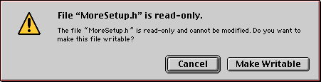

Contributing to MoreIsBetter
|
IMPORTANT:
This documented is targetted at Apple employees who are
contributing to MoreIsBetter. It contains instructions and
links that will not work for folks outside of the Apple
network. Non-Apple employees will find nothing secret here,
but also nothing useful (except, maybe, an insight into how
MoreIsBetter is constructed).
|
MoreIsBetter (MIB) is an attempt to provide developers with a
standard library of code that they can just drop into their
application. MoreIsBetter differs from standard DTS sample code in
that we expect developers to integrate and use chunks of MIB without
really looking at the code.
MoreIsBetter is modelled on the legendary DTS MoreFiles
sample.
Why Should You Join MoreIsBetter?
Developers regularly take DTS sample code and drop it unmodified
into their production applications. When you look at the code for a
finished application used by thousands of Mac users and see a DTSer's
comment "Your error checking goes here." you realise that something
is very wrong with the sample code model.
The goal of MoreIsBetter is to make this process both easier and
more reliable by
- structuring DTS sample code as reusable libraries
- making sure that each library is tested and ships with its
test program
- limiting the number of different debugging macros, coding
conventions, and so on that developers have to learn when using
DTS samples
- maintaining the libraries so that they compile as unit
You should join the MoreIsBetter effort because
- you want to support all of the above goals
- you have libraries of code that are useful, but not really
useful enough to ship as an independent sample
- you want to use source control for your samples but you can't
be bothered setting it up yourself
- because all the cool people in DTS are doing it (-:
Checking code into MIB does not preclude you also shipping it as a
sample. To create your sample, you just extract the relevant files
from MIB, package them up and submit them to the sample code
database. A good example of this is the MoreNetworkSetup
sample.
Getting Started
MoreIsBetter is hosted on the DTS CVS server
(dts-cvs.apple.com).
Read-Only Access via CodeWarrior and
MacCVS Pro
Execute the following steps to get read access to
MoreIsBetter.
- Mount the "dtscvs" volume of the DTS CVS (dts-cvs.apple.com)
server. You can log in as Guest.
- Open the "MoreIsBetter Tools" folder and drag a copy of the
disk image to your local hard disk.
- Mount the disk image.
- Copy the "DTS CVS Proj" document to somewhere convenient on
your hard disk.
- Double click this copy of "DTS CVS Proj". This will launch
MacCVS Pro.
- Select "Session Settings" from the Edit menu.
- In the Checkout and Update Options panel, click the set Set
button in the Local Tree Directory. Use Nav to choose where you
want your working copy of the MoreIsBetter hierarchy to be stored.
Typically you would create a folder on your local hard disk call
"MoreIsBetter" and choose that.
- Switch to the Remote Host Information panel and enter your
NetInfo account name and password into the CVS User Name and CVS
Password fields.
- Click OK to dismiss the settings dialog.
- Chose Save from the File menu to save your CVS changes.
- Choose Check Out Module from the Action menu. Enter
"MoreIsBetter" as the module name. MacCVS Pro will check out all
of MoreIsBetter to your local hard disk.
- Note:
- The included CodeWarrior is the version of CodeWarrior that I
use to build MoreIsBetter. Every time I cut a major release for
the sample code site I update these tools and check that
everything builds with them. I also update the documentation to
reflect the current tools of choice.
Read-Only Access via Project
Builder
I don't currently provide step-by-step instructions for accessing
MoreIsBetter from Project Builder primarily because of my lack of
experience with this environment. There should be nothing to stop you
using MoreIsBetter from Project Builder. If you manage to set this up
I encourage you to update these instructions to document your
experience.
Read/Write Access via CodeWarrior and
MacCVS Pro
If you need read/write access to MoreIsBetter, log on to Web
Directory, join the MoreIsBetterMaintainers group and send email
to the mailing
list requesting access. Someone on the group will contact you and
create your account.
Maintainers have full read/write access to the source and the
standard tool set. Please be careful.
The first step is to check out the MIB source code. Instructions
for doing this are given above. Once
you have checked out the source read-only, you'll probably want to
start modifying it. There are some tricks to learn before you attempt
this.
- To modify a file, start by attempting to change it in the
CodeWarrior IDE. The IDE will display the following dialog. You
should always click "Make Writable" (or press command-M). Like
BBS, we require that you not checkout out a source file. Instead,
you should MRO (modify read-only) the source file, make your
changes, and then merge your changes into the database.

- Once you've finished your changes, you should check them back
in. The first step is to see whether anyone else has modified the
file while you were changing it. To do this, switch to MacCVS Pro,
select the file, and choose Compare with Original from the Status
menu. You should review your changes to make sure that you've only
changed what you expected to change.
- Once you're confident that your changes are good, you should
check in the file. To do this, choose Commit from the Action menu.
MacCVS Pro will ask you for a checkin comment and then check in
your file. If the checkin fails, it could be that someone else has
made a conflicting change. You can fix this as described
below.
- Once your done checking in, choose Find Lurkers from the
Status menu to to make sure you've checked in all of your changes.
Note that the default for Find Lurkers is to only search the
current selection.
After you make big changes, please send email to the mailing
list and let folks know.
When you create a new file please use the standard header. You can
copy the text from the "MIB_SourceHeader.txt" file at the root of
"MIB-Libraries". This file includes both the standard DTS sample code
disclaimer and a special CVS keyword that inserts a change log at the
top of the file.
When you add a new module, please add it to the appropriate
targets in the master projects ("MoreIsBetterLib.mcp" and
"MoreIsBetterLib.pbproj" at the root of "MIB-Libraries") so that we
can continue to check that all the code compiles as a unit. You
should also add the module to the documentation HTML files.
Read/Write Access via Project Builder
See my comments above.
FAQ
Q: Before checking in my changes I did a
Compare with Original and found that someone else had made changes
while I was working on the file. How do I merge the changes?
A: As far as I can tell (and I'm just learning this stuff for
myself), MacCVS Pro has no support for a three way merge. To merge in
your changes:
- Use CodeWarrior's "Save a Copy as" menu command to save a copy
of your changes on the desktop.
- Use MacCVS Pro to revert the file to the version you checked
out using the Rollback command on the Action menu.
- Get the latest version of the file by choose Update from the
Action menu.
- Use CodeWarrior's Compare Files menu command to compare the
latest version of the file to your version on the desktop and
apply any changes that you need to merge in.
- Check in your new version. Don't forget to Compare with
Original the file again to check your changes.
Standard MIB Tools
The standard MoreIsBetter tool set is documented in the
MoreIsBetter documentation which is checked into the repository. If
you need something added to the standard tool set, raise the issue on
the MoreIsBetterMaintainers
mailing list.
Coding Conventions
When writing code for MoreIsBetter, please remember the following
rules.
- All DTS sample code, including MIB, is expected to conform to
Apple's Building
Code (CodeBert) standard. While we can't and don't enforce
these rules, you should at least be aware of the rules you are
breaking. Please read CodeBert before starting.
- MIB exists as a place where you can put code that developers
can reuse without modification. As such, any code you check in
should be production quality. Don't skimp on things like error
checking and testing, because that defeats the purpose of MIB. If
you want to do a quick and dirty hack, make it a standalone
sample. Only check it into MIB if you feel good about a developer
reusing it without modification.
- MIB code should not use MacHeaders, or any other prefix file.
Doing so a) masks missing include problems, and b) makes it much
harder for a developer to integrate MIB code into their project
(especially if they are not using CodeWarrior).
- All MIB code should include "MoreSetup.h", which provides
access to standard MIB facilities, including
MORE_DEBUG (set if debugging is being used) and
assert (standard C assertion macro). Try to avoid other,
custom debugging macros because they
make the developer's integration job harder.
- Because we're targetting modern compilers, MIB header files
use #pragma once rather than #ifdef __HEADERFILENAME__.
- In many cases it makes sense to provide a test program for
your MIB module in the same directory as the module. For example,
the MoreDisks folder includes the "MoreDisk.h" and "MoreDisks.c"
files that make up the module and a "TestMoreDisks" folder that
contains a test program that exercises the MoreDisks module.
- In most cases, there's a MoreIsBetter module for each header
file in the system. For example, there's a "MoreAppleEvents"
module and a "MoreOSL" module. You may find yourself needing a new
module, which is fine. Feel free to create one. If you're not
sure, ask the mailing
list.
- If you add a new module, use the existing modules as a
template.
- All new source files checked into MIB should have the standard
DTS disclaimer. You should also include the appropriate CVS
keywords so that the file includes a change log. See
"MIB_SourceHeader.txt" for an example.
- Unless it's infeasible, source files should build for both
Carbon and non-Carbon, Project Builder and CodeWarrior, and PEF
and Mach-O. You can test all of these build environments by adding
your module to the master projects ("MoreIsBetterLib.mcp" and
"MoreIsBetterLib.pbproj" at the root of "MIB-Libraries").
Maintaining MoreIsBetter
<<This section will eventually describe how to maintain the
MoreIsBetter project in case I get hit by a truck. For the moment, it
just contains bullet points.>>>
- The MoreIsBetter database is now hosted in the CVS respository
on dts-cvs.apple.com and will be backed along with all the other
DTS CVS stuff contained therein.
- snapshotting MIB for the sample code database
- generating reports of MIB changes, previously done use
Projector, I don't quite know how to do this on CVS yet
- MakeDist.mpwscript checks out clean copy and bundles it up
for developers; have to rewrite this for CVS; don't quite know
how yet
- updating the MIB standard tools
Quinn "The Eskimo!"
Worldwide Developer Technical Support
7 Nov 2001